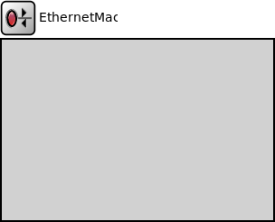

Package: inet.linklayer.ethernet.basic
EthernetMac
compound moduleEthernet MAC which supports full-duplex operation ONLY. See the ~IEtherMac for general informations.
Most of today's Ethernet networks are switched, and operate in full-duplex mode. Full-duplex transmission can be used for point-to-point connections only. Since full-duplex connections cannot be shared, collisions are eliminated. This setup eliminates most of the need for the CSMA/CD access control mechanism because there is no need to determine whether the connection is already being used. This allows for a much simpler simulation model for MAC. (In "traditional" Ethernet simulations, most of the code deals with the shared medium and the CSMA/CD mechanism.) ~EthernetMac implements Ethernet without shared medium and CSMA/CD. (If you need half-duplex operation, see ~EthernetCsmaMac which is for a full-blown and therefore more complicated Ethernet MAC model.)
~EthernetMac performs transmission and reception of frames. It does not do encapsulation/decapsulation; see ~Ieee8022Llc and ~EthernetEncapsulation for that.
Supported variations:
- 10Mb Ethernet (full-duplex mode)
- 100Mb Ethernet (full-duplex mode)
- 1Gb Ethernet (full-duplex mode)
- 10Gb Ethernet (full-duplex mode)
- 40Gb Ethernet (full-duplex mode)
- 100Gb Ethernet (full-duplex mode)
Supports all three Ethernet frame types. (It handles ~EtherFrame message class; specific frame classes (Ethernet-II, IEEE 802.3) are subclassed from that one.) RAW mode (only used by the IPX protocol) is not supported.
Processing of frames received from higher layers:
- if src address in the frame is empty, fill it out
- frames get queued up until transmission
- transmits the frame when the transmitter is ready
- can send PAUSE message if requested by higher layers (PAUSE protocol, used in switches).
Processing of frames incoming from the network:
- receive frame from the network
- CRC checking (frames with the error bit set are discarded).
- respond to PAUSE frames
- in promiscuous mode, pass up all received frames; otherwise, only frames with matching MAC addresses and broadcast frames are passed up.
The module does not perform encapsulation or decapsulation of frames -- this is done by higher layers (~EthernetEncapsulation).
When a frame is received from the higher layers, it must be an ~EtherFrame, and with all protocol fields filled out (including the destination MAC address). The source address, if left empty, will be filled in. Then frame is queued and transmitted.
Data frames received from the network are EtherFrames. They are passed to the higher layers without modification. Also, the module properly responds to PAUSE frames, but never sends them by itself -- however, it transmits PAUSE frames received from upper layers. See PAUSE handling for more info.
For more info see Ethernet Model Overview.
<b>Disabling and disconnecting</b>
If the MAC is not connected to the network ("cable(1,2) unplugged"), it will start up in "disabled" mode. A disabled MAC simply discards any messages it receives. It is currently not supported to dynamically connect/disconnect a MAC.
In routers, MAC relies on an external queue module (see ~IPacketQueue) to model finite buffer, implement QoS and/or RED, and requests packets from this external queue one-by-one.
In hosts, no such queue is used, so MAC contains an internal queue to store packets waiting for transmission. Conceptually, the queue is of infinite size, but for better diagnostics one can specify a hard limit in the queue parameter -- if this is exceeded, the simulation stops with an error.
<b>Physical layer messaging</b>
Please see Messaging on the physical layer.
<b>See also:</b> ~EthernetCsmaMac, ~EthernetInterface, ~IPacketQueue, ~EthernetEncapsulation, ~Ieee8022Llc
<b>See also:</b> ~EtherFrame, ~EthernetIIFrame, ~EtherFrameWithLlc, ~Ieee802Ctrl
Inheritance diagram
The following diagram shows inheritance relationships for this type. Unresolved types are missing from the diagram.
Parameters
| Name | Type | Default value | Description |
|---|---|---|---|
| interfaceTableModule | string |
The path to the InterfaceTable module |
|
| displayStringTextFormat | string | "rate: %b\nsent: %s, rcvd: %r\nqueue: %q, drop: %d" | |
| sendRawBytes | bool | false |
when true packets are serialized into a sequence of bytes before sending out |
| promiscuous | bool | false |
if true, all packets are received, otherwise only the ones with matching destination MAC address |
| duplexMode | bool |
must be set to "true", as EthernetMac does not support half-duplex operation (parameter is present to reduce the risk of accidental misconfiguration) |
|
| mtu | int | 1500B | |
| fcsMode | string | ||
| stopOperationExtraTime | double | -1s |
extra time after lifecycle stop operation finished |
| stopOperationTimeout | double | 2s |
timeout value for lifecycle stop operation |
Properties
| Name | Value | Description |
|---|---|---|
| lifecycleSupport | ||
| class | EthernetMac | |
| display | i=block/rxtx |
Gates
| Name | Direction | Size | Description |
|---|---|---|---|
| upperLayerIn | input |
to ~EthernetEncapsulation or ~IMacRelayUnit |
|
| upperLayerOut | output |
to ~EthernetEncapsulation or ~IMacRelayUnit |
|
| phys | inout |
to the network |
Signals
| Name | Type | Unit |
|---|---|---|
| receptionStateChanged | long | |
| rxPkFromHl | inet::Packet | |
| receptionEnded | inet::physicallayer::EthernetSignalBase | |
| packetReceivedFromLower | inet::Packet | |
| packetReceivedFromUpper | inet::Packet | |
| txPausePkUnits | long | |
| txPk | inet::Packet | |
| rxPausePkUnits | long | |
| transmissionStarted | inet::physicallayer::EthernetSignalBase | |
| rxPkOk | inet::Packet | |
| packetDropped | inet::Packet | |
| packetSentToLower | inet::Packet | |
| packetSentToUpper | inet::Packet | |
| transmissionStateChanged | long | |
| transmissionEnded | inet::physicallayer::EthernetSignalBase |
Statistics
| Name | Title | Source | Record | Unit | Interpolation Mode |
|---|---|---|---|---|---|
| passedUpPk | packets passed to higher layer | packetSentToUpper | count, sum(packetBytes), vector(packetBytes) | none | |
| packetDropInterfaceDown | packet drop: interface down | packetDropReasonIsInterfaceDown(packetDropped) | count, sum(packetBytes), vector(packetBytes) | none | |
| rxPkOk | packets received OK | rxPkOk | count, sum(packetBytes), vector(packetBytes) | none | |
| packetDropNotAddressedToUs | packet drop: not addressed to us | packetDropReasonIsNotAddressedToUs(packetDropped) | count, sum(packetBytes), vector(packetBytes) | none | |
| packetReceivedFromUpper | packet bytes from higher layer | packetReceivedFromUpper | count, sum(packetBytes), vector(packetBytes) | none | |
| txPausePkUnits | pause units sent | count, sum, vector | none | ||
| txPk | packets transmitted | packetSentToLower | count, sum(packetBytes), vector(packetBytes) | none | |
| rxPausePkUnits | pause units received | count, sum, vector | none | ||
| packetDropIncorrectlyReceived | packet drop: incorrectly received | packetDropReasonIsIncorrectlyReceived(packetDropped) | count, sum(packetBytes), vector(packetBytes) | none |
Source code
// // Ethernet MAC which supports full-duplex operation ONLY. // See the ~IEtherMac for general informations. // // Most of today's Ethernet networks are switched, and operate // in full-duplex mode. Full-duplex transmission can be used for // point-to-point connections only. Since full-duplex connections // cannot be shared, collisions are eliminated. This setup eliminates // most of the need for the CSMA/CD access control mechanism because // there is no need to determine whether the connection is already // being used. This allows for a much simpler simulation model // for MAC. (In "traditional" Ethernet simulations, most of the code // deals with the shared medium and the CSMA/CD mechanism.) // ~EthernetMac implements Ethernet without shared medium and CSMA/CD. // (If you need half-duplex operation, see ~EthernetCsmaMac which is for a full-blown // and therefore more complicated Ethernet MAC model.) // // ~EthernetMac performs transmission and reception of frames. // It does not do encapsulation/decapsulation; see ~Ieee8022Llc and ~EthernetEncapsulation // for that. // // Supported variations: // - 10Mb Ethernet (full-duplex mode) // - 100Mb Ethernet (full-duplex mode) // - 1Gb Ethernet (full-duplex mode) // - 10Gb Ethernet (full-duplex mode) // - 40Gb Ethernet (full-duplex mode) // - 100Gb Ethernet (full-duplex mode) // // Supports all three Ethernet frame types. (It handles ~EtherFrame message class; // specific frame classes (Ethernet-II, IEEE 802.3) are subclassed from that one.) // RAW mode (only used by the IPX protocol) is not supported. // // <b>Operation</b> // // Processing of frames received from higher layers: // - if src address in the frame is empty, fill it out // - frames get queued up until transmission // - transmits the frame when the transmitter is ready // - can send PAUSE message if requested by higher layers (PAUSE protocol, // used in switches). // // Processing of frames incoming from the network: // - receive frame from the network // - CRC checking (frames with the error bit set are discarded). // - respond to PAUSE frames // - in promiscuous mode, pass up all received frames; // otherwise, only frames with matching MAC addresses and // broadcast frames are passed up. // // The module does not perform encapsulation or decapsulation of frames -- // this is done by higher layers (~EthernetEncapsulation). // // When a frame is received from the higher layers, it must be an ~EtherFrame, // and with all protocol fields filled out // (including the destination MAC address). The source address, if left empty, // will be filled in. Then frame is queued and transmitted. // // Data frames received from the network are EtherFrames. They are passed to // the higher layers without modification. // Also, the module properly responds to PAUSE frames, but never sends them // by itself -- however, it transmits PAUSE frames received from upper layers. // See <a href="ether-pause.html">PAUSE handling</a> for more info. // // For more info see <a href="ether-overview.html">Ethernet Model Overview</a>. // // <b>Disabling and disconnecting</b> // // If the MAC is not connected to the network ("cable unplugged"), it will // start up in "disabled" mode. A disabled MAC simply discards any messages // it receives. It is currently not supported to dynamically connect/disconnect // a MAC. // // // <b>Queueing</b> // // In routers, MAC relies on an external queue module (see ~IPacketQueue) // to model finite buffer, implement QoS and/or RED, and requests packets // from this external queue one-by-one. // // In hosts, no such queue is used, so MAC contains an internal // queue to store packets waiting for transmission. // Conceptually, the queue is of infinite size, but for better diagnostics // one can specify a hard limit in the queue parameter -- if this is // exceeded, the simulation stops with an error. // // // <b>Physical layer messaging</b> // // Please see <a href="physical.html">Messaging on the physical layer</a>. // // @see ~EthernetCsmaMac, ~EthernetInterface, ~IPacketQueue, ~EthernetEncapsulation, ~Ieee8022Llc // @see ~EtherFrame, ~EthernetIIFrame, ~EtherFrameWithLlc, ~Ieee802Ctrl // module EthernetMac like IEtherMac { parameters: string interfaceTableModule; // The path to the InterfaceTable module string displayStringTextFormat = default("rate: %b\nsent: %s, rcvd: %r\nqueue: %q, drop: %d"); bool sendRawBytes = default(false); // when true packets are serialized into a sequence of bytes before sending out bool promiscuous = default(false); // if true, all packets are received, otherwise only the // ones with matching destination MAC address bool duplexMode; // must be set to "true", as EthernetMac does not support half-duplex operation // (parameter is present to reduce the risk of accidental misconfiguration) int mtu @unit(B) = default(1500B); string fcsMode @enum("declared","computed"); @lifecycleSupport; double stopOperationExtraTime @unit(s) = default(-1s); // extra time after lifecycle stop operation finished double stopOperationTimeout @unit(s) = default(2s); // timeout value for lifecycle stop operation @class(EthernetMac); @display("i=block/rxtx"); @signal[txPk](type=inet::Packet); @signal[rxPkOk](type=inet::Packet); @signal[txPausePkUnits](type=long); @signal[rxPausePkUnits](type=long); @signal[rxPkFromHl](type=inet::Packet); @signal[packetDropped](type=inet::Packet); @signal[packetSentToLower](type=inet::Packet); @signal[packetReceivedFromLower](type=inet::Packet); @signal[packetSentToUpper](type=inet::Packet); @signal[packetReceivedFromUpper](type=inet::Packet); @signal[transmissionStateChanged](type=long); // enum=MacTransmitState @signal[receptionStateChanged](type=long); // enum=MacReceiveState @signal[transmissionStarted](type=inet::physicallayer::EthernetSignalBase); @signal[transmissionEnded](type=inet::physicallayer::EthernetSignalBase); @signal[receptionEnded](type=inet::physicallayer::EthernetSignalBase); @statistic[txPk](title="packets transmitted"; source=packetSentToLower; record=count,"sum(packetBytes)","vector(packetBytes)"; interpolationmode=none); @statistic[rxPkOk](title="packets received OK"; source=rxPkOk; record=count,"sum(packetBytes)","vector(packetBytes)"; interpolationmode=none); @statistic[passedUpPk](title="packets passed to higher layer"; source=packetSentToUpper; record=count,"sum(packetBytes)","vector(packetBytes)"; interpolationmode=none); @statistic[txPausePkUnits](title="pause units sent"; record=count,sum,vector; interpolationmode=none); @statistic[rxPausePkUnits](title="pause units received"; record=count,sum,vector; interpolationmode=none); @statistic[packetReceivedFromUpper](title="packet bytes from higher layer"; source=packetReceivedFromUpper; record=count,"sum(packetBytes)","vector(packetBytes)"; interpolationmode=none); @statistic[packetDropIncorrectlyReceived](title="packet drop: incorrectly received"; source=packetDropReasonIsIncorrectlyReceived(packetDropped); record=count,sum(packetBytes),vector(packetBytes); interpolationmode=none); @statistic[packetDropInterfaceDown](title="packet drop: interface down"; source=packetDropReasonIsInterfaceDown(packetDropped); record=count,sum(packetBytes),vector(packetBytes); interpolationmode=none); @statistic[packetDropNotAddressedToUs](title="packet drop: not addressed to us"; source=packetDropReasonIsNotAddressedToUs(packetDropped); record=count,sum(packetBytes),vector(packetBytes); interpolationmode=none); gates: input upperLayerIn @labels(EtherFrame); // to ~EthernetEncapsulation or ~IMacRelayUnit output upperLayerOut @labels(EtherFrame); // to ~EthernetEncapsulation or ~IMacRelayUnit inout phys @labels(EthernetSignal); // to the network }File: src/inet/linklayer/ethernet/basic/EthernetMac.ned
 This documentation is released under the Creative Commons license
This documentation is released under the Creative Commons license